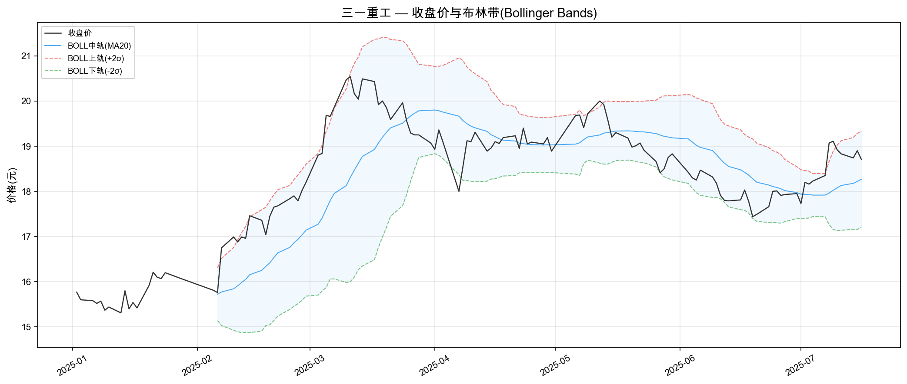
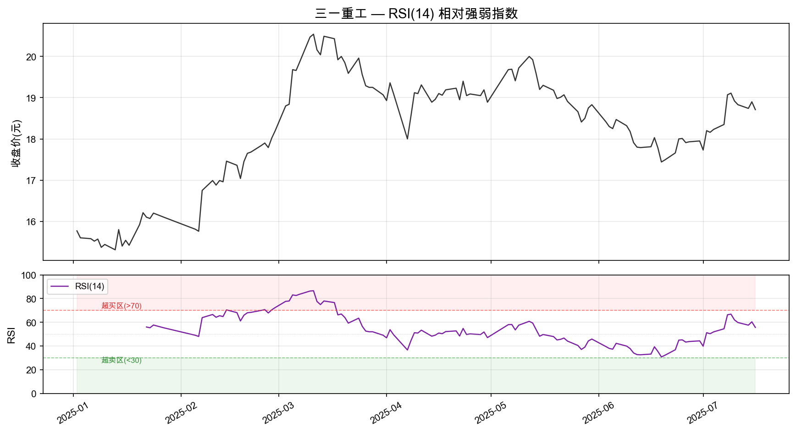
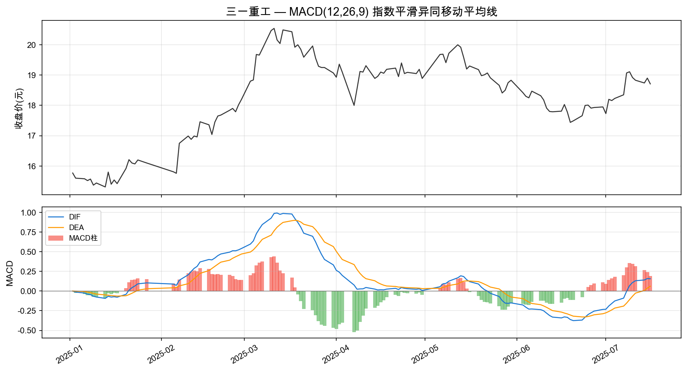
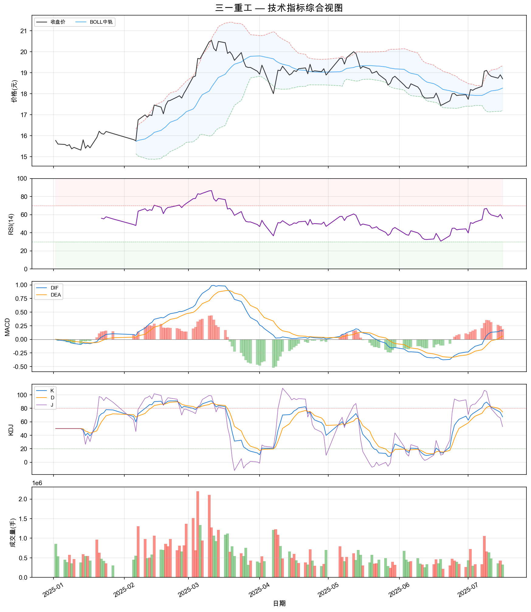
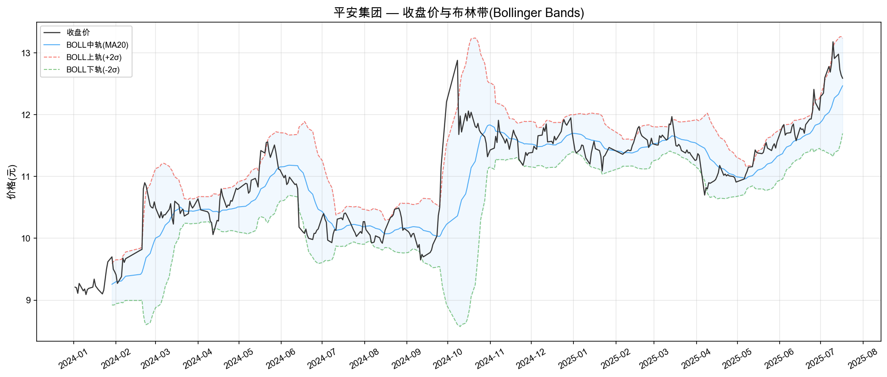
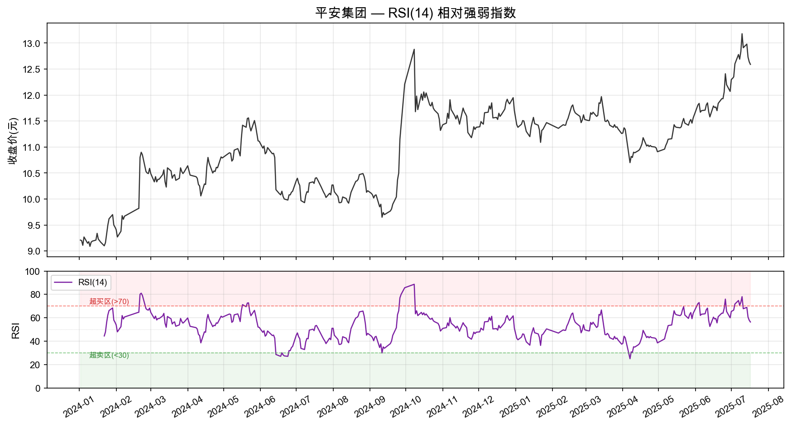
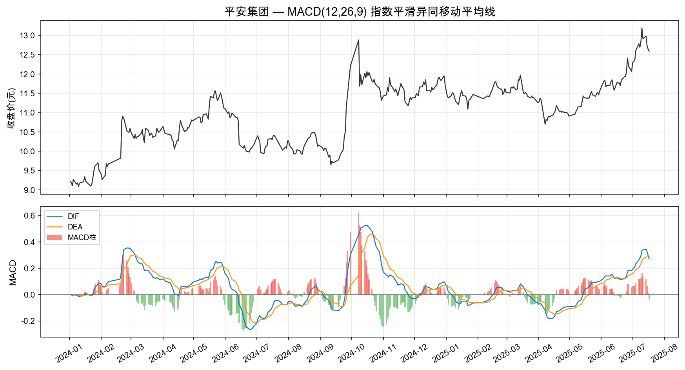
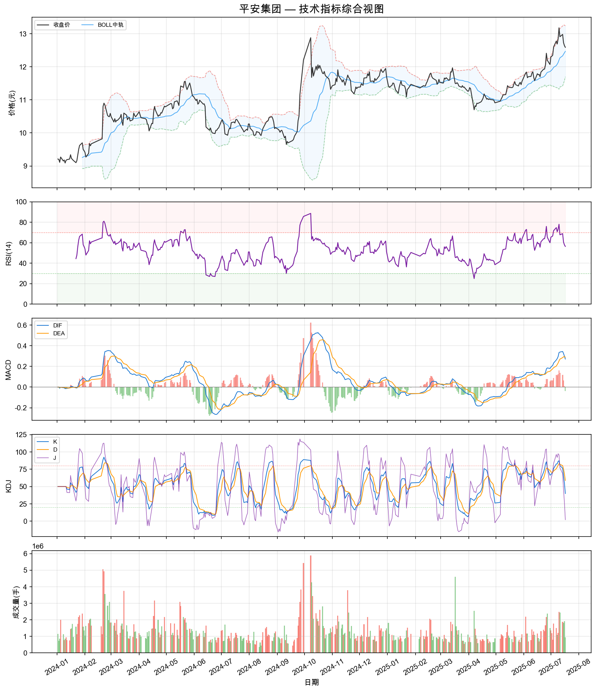
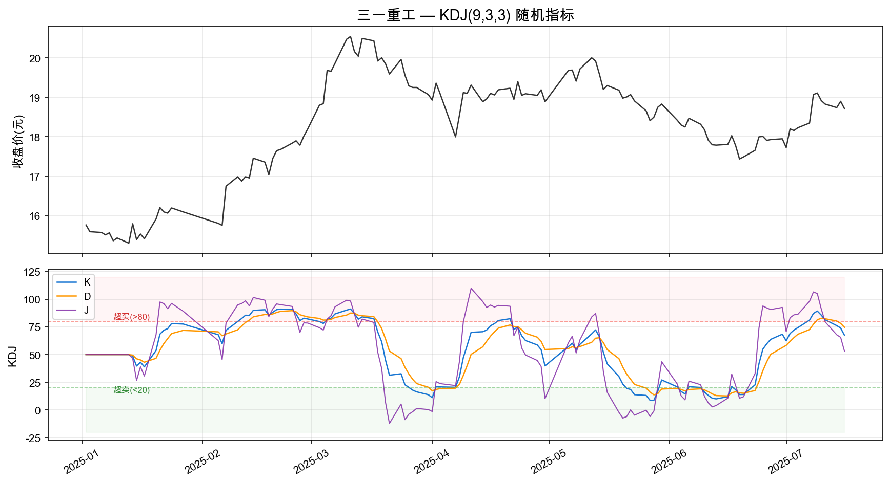
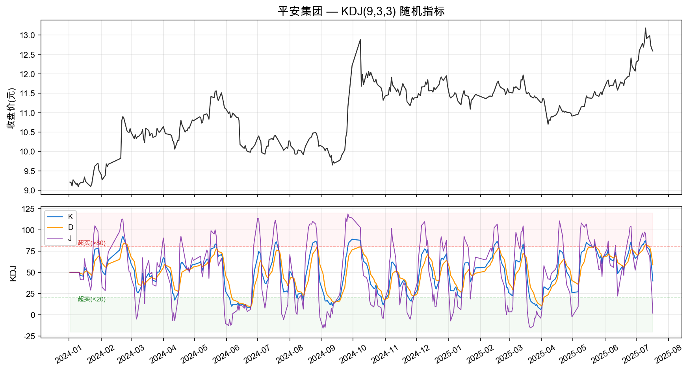

对两份行情数据文件进行缺失值检查与描述性统计量计算，评估数据质量与分布特征。
数据时间范围: 2025-01-02 ~ 2025-07-16，共 129 条记录
| 指标 | 均值 | 标准差 | 最小值 | 最大值 | 中位数 |
|---|---|---|---|---|---|
| 开盘价 | 18.24 | 1.37 | 15.31 | 20.50 | 18.45 |
| 最高价 | 18.46 | 1.38 | 15.54 | 20.75 | 18.88 |
| 最低价 | 18.04 | 1.35 | 15.23 | 20.23 | 18.34 |
| 收盘价 | 18.25 | 1.36 | 15.31 | 20.54 | 18.55 |
| 成交量(手) | 612,098 | 340,873 | 222,383 | 2,198,570 | 493,318 |
| 成交额(千元) | 1,127,769 | 673,495 | 388,410 | 4,353,082 | 869,587 |
| 涨跌幅(%) | 0.13 | 1.68 | -5.76 | 6.28 | 0.00 |
数据时间范围: 2024-01-02 ~ 2025-07-17，共 372 条记录
| 指标 | 均值 | 标准差 | 最小值 | 最大值 | 中位数 |
|---|---|---|---|---|---|
| 开盘价 | 10.94 | 0.84 | 9.05 | 13.43 | 11.04 |
| 最高价 | 11.05 | 0.86 | 9.18 | 13.43 | 11.16 |
| 最低价 | 10.85 | 0.83 | 8.96 | 12.89 | 10.99 |
| 收盘价 | 10.95 | 0.84 | 9.09 | 13.18 | 11.09 |
| 成交量(手) | 1,320,700 | 753,730 | 353,013 | 5,888,978 | 1,108,879 |
| 成交额(千元) | 1,458,609 | 883,747 | 353,251 | 7,602,664 | 1,232,555 |
| 涨跌幅(%) | 0.12 | 1.49 | -9.32 | 9.98 | 0.04 |
发明者: J. Welles Wilder (1978年) ｜ 常用周期: 14天
发明者: Gerald Appel (1979年) ｜ 常用参数: 12, 26, 9
发明者: John Bollinger (1980年代) ｜ 常用参数: 20日, 2倍标准差
使用 pandas/numpy 计算三大指标，matplotlib 绘制可视化图形。以下展示两只股票的指标图表。








| 日期 | 收盘价 | RSI(14) | DIF | DEA | MACD柱 | BOLL下轨 | BOLL上轨 |
|---|---|---|---|---|---|---|---|
| 2025-07-10 | 18.92 | 62.0 | 0.1080 | -0.0659 | 0.348 | 17.13 | 19.02 |
| 2025-07-11 | 18.83 | 59.8 | 0.1309 | -0.0266 | 0.315 | 17.14 | 19.12 |
| 2025-07-14 | 18.74 | 57.5 | 0.1401 | 0.0068 | 0.267 | 17.16 | 19.19 |
| 2025-07-15 | 18.90 | 60.4 | 0.1585 | 0.0371 | 0.243 | 17.16 | 19.28 |
| 2025-07-16 | 18.71 | 55.6 | 0.1559 | 0.0609 | 0.190 | 17.20 | 19.33 |
| 日期 | 收盘价 | RSI(14) | DIF | DEA | MACD柱 | BOLL下轨 | BOLL上轨 |
|---|---|---|---|---|---|---|---|
| 2025-07-11 | 12.91 | 67.7 | 0.3392 | 0.2707 | 0.137 | 11.39 | 13.16 |
| 2025-07-14 | 12.98 | 68.9 | 0.3449 | 0.2855 | 0.119 | 11.42 | 13.24 |
| 2025-07-15 | 12.73 | 60.6 | 0.3254 | 0.2935 | 0.064 | 11.50 | 13.26 |
| 2025-07-16 | 12.64 | 57.9 | 0.2993 | 0.2946 | 0.009 | 11.58 | 13.26 |
| 2025-07-17 | 12.59 | 56.4 | 0.2715 | 0.2900 | -0.037 | 11.70 | 13.24 |
选取 KDJ 作为扩展指标进行介绍和计算。KDJ 是中国市场最常用的短线技术指标之一。


| 股票 | 日期 | K | D | J | 信号判断 |
|---|---|---|---|---|---|
| 三一重工 | 2025-07-16 | 67.4 | 74.6 | 52.9 | K<D，J下行，短线偏弱 |
| 平安集团 | 2025-07-17 | 39.9 | 58.9 | 2.1 | J≈0 极度超卖，关注反弹 |
| 任务 | 内容 | 产出 |
|---|---|---|
| ① 数据诊断 | 缺失值检查 + 描述性统计 | 两份数据完整无缺失，统计量已计算 |
| ② 指标调研 | RSI / MACD / 布林带 | 计算公式、参数、作用及应用场景 |
| ③ 编程实现 | 加载→计算→可视化 | Python脚本 + 10张可视化图表 |
| ④ 扩展指标 | KDJ 随机指标 | 介绍 + 计算 + 图形展示 |
全部计算代码见 technical_analysis.py，带指标的完整数据见
三一重工_含技术指标.csv 和 平安集团_含技术指标.csv。